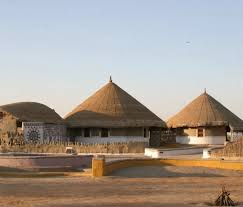
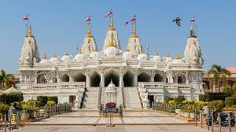
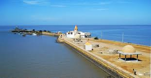
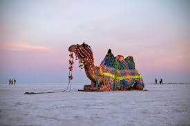
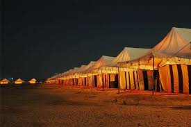
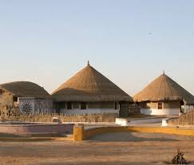
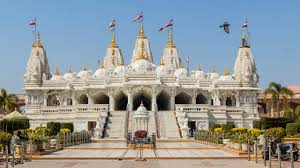
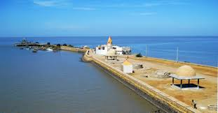
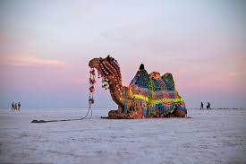
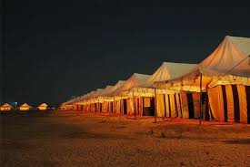

White Desert
Massive salt flats glowing at sunset and full-moon nights.
The Great Rann of Kutch is a massive white salt desert stretching across Gujarat. It becomes especially popular during the Rann Utsav, a cultural festival with music, dance, crafts and luxury tents.
Sunsets and full-moon nights on the white desert are the main highlight, along with village handicrafts and camel rides.
Massive salt flats glowing at sunset and full-moon nights.
Seasonal festival with tents, music, food and cultural shows.
Highest point in Kutch offering desert views and sunset panoramas.
Famous for Kutchi handlooms, embroidery and crafts.
The glowing salt flats create one of India’s most surreal landscapes.
Local music, dance, stalls, food, crafts and tent accommodations.
Hilltop viewpoint offering panoramic views of the desert edge.
Festival + viewpoints + crafts.
Quick trip
Balanced
3 days
Luxury tents with festival access and guided tours.
Best for first-time visitors.
Eco-friendly homestays showcasing Kutchi culture.
Ideal for cultural experiences.
Budget hotels with easy transport to Rann.
Practical for short trips.
 









Permits, timing and desert essentials.